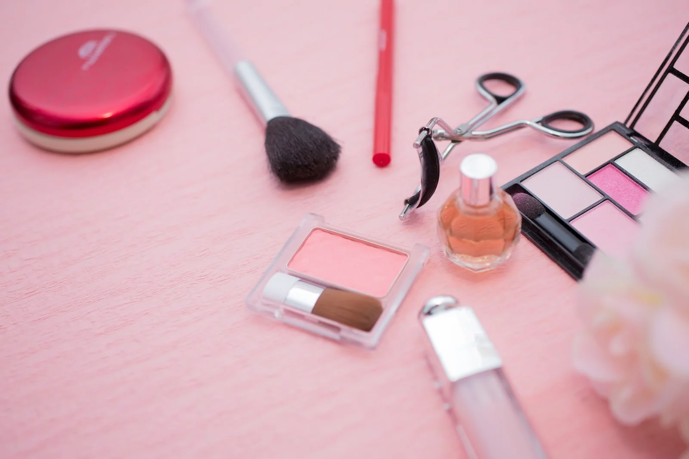

まつ毛ケア 塗るだけで目もとケア ロングラッシュリッチ
まずはロングラッシュリッチメリットから

ロングラッシュリッチは、Wまつ美成分を高濃度で配合した本格派まつ毛美容液。
塗るだけで、まつ毛と目もと両方をやさしくケアできるのが特徴です。
毎日のスキンケア感覚で続けられます。
利用者からも高い評価を受けています。
- 😄「マツエクOKなのがいい」
- 😄「コスパ最高」
- 😄「チップが塗りやすい、下まつげにもばっちり」
- など
😥 こんな悩み、ありませんか？
「まつ毛が少なくなってきた気がする…」
「マスカラやビューラーでまつ毛が傷んだ」
「目もとの印象がぼやけて見える」
そんな悩み、放っておかずにケアしてみませんか？
詳しい成分表
| 成分 | 効果 |
|---|---|
| キャピキシル | 育毛・発毛効果が期待されるペプチド成分。まつ毛の成長を促進。 |
| グラドシホンノバエカレドニアエ多糖体 | 海藻由来で保湿・ハリを与える成分。 | プロビタミンB5 | 保湿・修復効果があり、まつ毛の乾燥を防ぐ。 | 加水分解シルク | 髪やまつ毛をなめらかにし、コシとツヤを与える。 | ローヤルゼリー | 栄養補給・保湿効果が高く、まつ毛に栄養を与える。 | ヒアルロン酸 | 保湿成分の代表格で、まつ毛と目元の乾燥を防ぐ。 | カミツレ花エキス | 抗炎症・肌荒れ防止効果あり。目元にやさしい。 |
料金プラン
| プラン | 金額 | 返金 | 変更 |
|---|---|---|---|
| 定期コース | 3,243円 (税込) 送料無料 | 28日間の返金保証制度あり | 解約、休止、変更がいつでもか可能 |
| 2本セット | 7,703円（税込）送料無料 | ||
| ３本セット | 10,947円（税込）送料無料 |
まとめ
ロングラッシュリッチは、まつ毛美容液の中でもWまつ美成分を高濃度で配合し、保湿・補修・育毛に優れた処方が魅力です。
マツエク中でも使える、チップ式で塗りやすい、という利便性も人気の理由。
お得な定期コースには28日間の返金保証もありますので、まずはお試しがおすすめです。
▼こちらから公式サイトへ▼